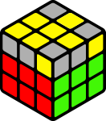

Cubes
Для новичков
1 этап - сборка правильного креста
Правильный крест

Неправильный крест
Для удобства будем ставить элементы креста по одному. Для начала ставим белый центр наверх
и на кубике находим 4 ребра с белым цветом: бело-красное, бело-оранжевое, бело-синее и бело-зеленое.
После этого выбираем любое, его мы и будем ставить первым. У нас может возникнуть несколько
ситуаций, каждая из которых рассмотрена на картинках ниже.
Если ребро стоит в среднем слое, то просто движениями R или L' ставим их к белому центру.
Но это место может оказаться уже занято другим ребром с белым цветом, поэтому мы должны
отвести его в сторону при помощи поворотов U, U' или U2 и поставить нужное нам ребро
уже знакомыми поворотами R или L'.
Если же ребро окажется на верхнем или нижнем слое, то движениями F или F' ставим их
в средний слой и делаем R или L', как и до этого.
Также ребро может оказаться в нижнем слое и белым цветом смотреть вниз. В таком случае
ставим свободное место наверху над ним и поднимаем ребро движением F2.
Таким образом нужно поставить к белому центру все 4 ребра.
R
L'
U, U' или U2 + R
U, U' или U2 + L'

F R или F' L'
F' R или F L'
F2
Поставив 4 ребра к своему центру, мы получим крест. Он может уже сейчас оказаться правильным,
но в большинстве случаев этого не происходит, поэтому нужно эти ребра поменять между собой местами,
чтобы он стал правильным.
Крутим верхний слой, пока 2 ребра не будут совпадать по цвету с центрами. Здесь может быть
2 ситуации: совпадают смежные ребра и нужно поменять местами 2 других или же совпадают
противоположные ребра и нужно поменять местами оставшиеся. Оба случая рассмотрены на картинках ниже.
На данном этапе нужно запомнить простой алгоритм R U R' U', называемый пиф-пафом, он еще окажется
нам полезен.

(R U R' U') R | Запоминаем: R U R' U' - пиф-паф
R U2 R' U2 R
2 этап - сборка первого слоя
Собранный первый слой

Собранный первый слой
Находим один из четырех белых углов, находим место на нижнем слое, где этот уголок должен
находиться (например, бело-красно-синий уголок должен стоят между синим и красным элементами креста),
ставим найденный уголок над этим местом. Ниже рассмотрены все случаи, которые могут выпасть на
данном этапе. Выполнив алгоритм, мы поставим уголок на свое место. Подобным образом ставим оставшиеся
три. Обращаем ваше внимание на случаи, когда белый угол находится не на верхнем слое, а внизу.
5 пиф-пафов

1 пиф-паф
3 пиф-пафа

4 пиф-пафа

2 пиф-пафа

Пиф-паф и одна из ситуаций
3 этап - сборка второго слоя

Собранный второй слой
Собранный второй слой
Как уже было сказано выше, находим 4 ребра без желтого цвета. Выбираем на верхнем
слое одно, которое будем ставить первым, и крутим верхнюю грань до тех пор, пока
одна из наклеек этого ребра не совпадет по цвету с центром. Далее получаем одну из
ситуаций. Как и в предыдущем этапе, элементы могу оказаться не на верхнем слое, а
ниже, эти ситуации также рассмотрены.

U R U' R' F R' F' R

U' L' U L F' L F L'
“Направо” U2 “Направо”

“Направо” и одна из первых двух ситуаций
4 этап - сборка желтого креста

F R U R' U' F'
F U R U' R' F'

“Палка” U2 “Галка”
5 этап - сборка желтой стороны

R U R' U R U2 R'
R U2 R' U' R U' R'

“Л.рыбка” U' “П.рыбка”

“Л.рыбка” U “П.рыбка”
“Л.рыбка” U2 “П.рыбка”
“П.рыбка” 2 раза

“П.рыбка” U’ “П.рыбка”
Рузультат
6 этап - сборка углов верхнего слоя

R2 D2 R U R' D2 R U' R
“Глаза справа” два раза или R' U R' D2 R U' R' D2 R2
Выбираем любой уголок и движениями U, U' и U2 ставим его на свое место, чтобы оба цвета
угла совпали с двумя цветами на нижних слоях. В зависимости от полученной ситуации, делаем
один из алгоритмов. Обращаем внимание, что они делаюся из другого положения, поэтому нужно
взять кубик белым цветом к себе.
Могут возникнуть 2 дополнительные ситуации:
1. Уголок встал на свое место, но рядом с ним на свое место встал еще один. Продолжаем
крутить верхнюю грань, следя теперь за другим несобранным уголком. Он уже встанет так,
как нужно в первых двух ситуациях.
2. Уголок встал на свое место, но по диагонали на свое место встал еще один.
Берем кубик белым цветом к себе и делаем алгоритм “Глаза справа”. Выбираем любой
уголок и ставим его на своё место. Теперь уже всё получится так, как нужно для первых
двух ситуаций.
7 этап - сборка ребер верхнего слоя
R U' R U R U R U’ R’ U’ R2 - Треугольник

Треугольник 2 раза

Треугольник U’ Треугольник
Треугольник U Треугольник
Поздравляем! Вы собрали куб и близитесь к майнкрафту!